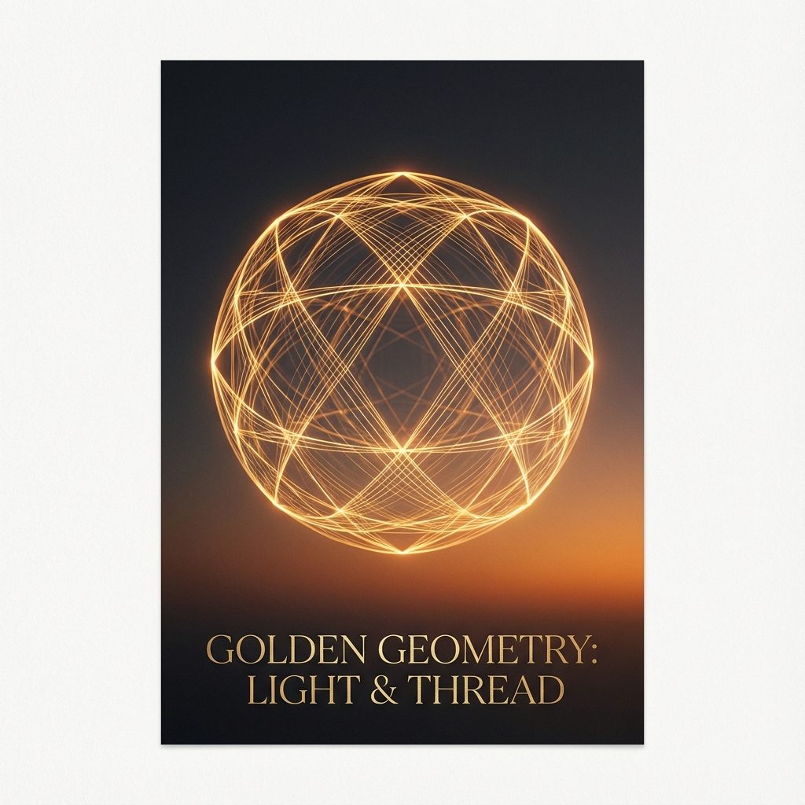

🚀 Flagship Experiments
Each experiment is a step toward products that matter — not just cool outputs.

idea-to-song
Turn a simple idea or mood into a fully generated original song.

idea-to-art
Transform abstract concepts into visual art and posters.

idea-to-story
Expand a seed idea into coherent stories.